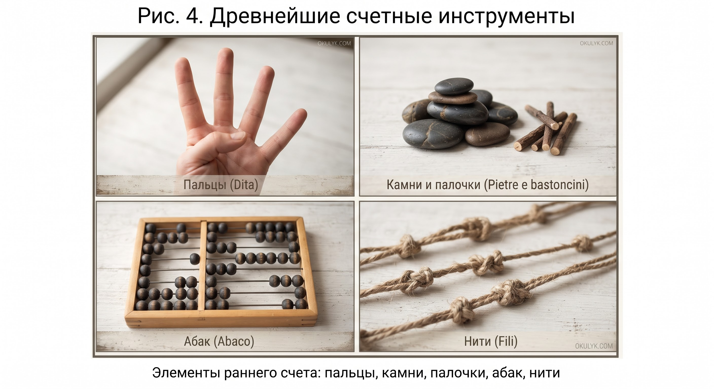
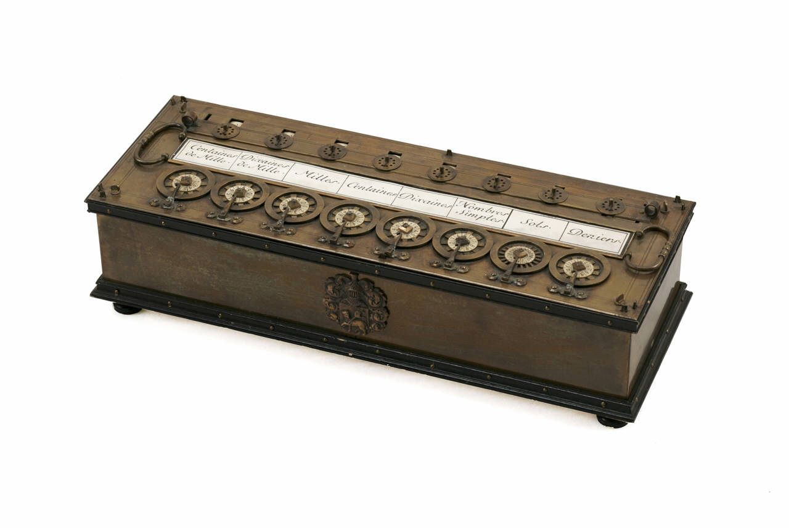
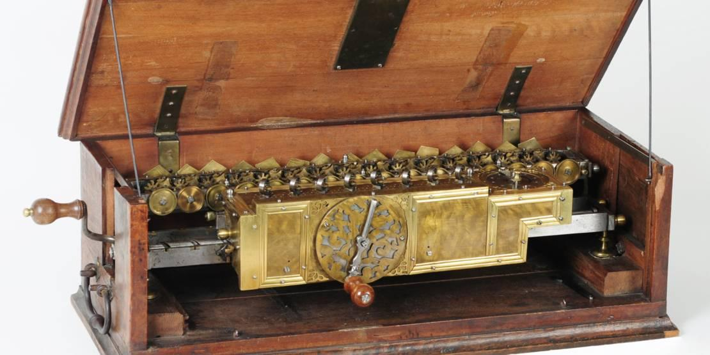
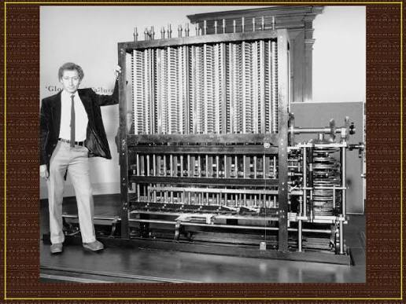

Интерактивный урок информатики для Сары 💻✨
С каждым днем вычислительная техника стремительно развивается. Так как компьютеры функционируют во всех отраслях нашей жизни, важно знать об истории и будущем компьютерных технологий.
Понятие числа возникло задолго до появления письменности. Люди учились считать в течение многих веков, передавая и обогащая свой опыт из поколения в поколение. Для счета они использовали пальцы, камни, нити, деревянные палочки и др.
Самое первое и всем нам известное вычислительное устройство — счеты. Никто не может сказать, когда они появились: по некоторым данным им более 2000–5000 лет. Использовались они в Древнем Китае, в Древнем Египте и Древней Греции.
Схема 2. История развития счетов:

Пальцы, камни, палочки, абак

Суммирующая механическая машина

Механическое вычислительное устройство

«Отец современного компьютера»
Первые автоматизированные компьютеры в США были 17 метров длиной и весили 5 тонн!
| № | Название устройства | Год / Автор |
|---|---|---|
| 1 | Машина Паскаля | 1642, Блез Паскаль |
| 2 | Арифмометр Лейбница | 1694, Готфрид Лейбниц |
| 3 | Аналитическая машина | 1833, Чарлз Бэббидж |
| 4 | Перфорационная машина Холлерита | Конец XIX в., Герман Холлерит |
| 5 | Машина Тьюринга | 1936, Алан Тьюринг |
| 6 | Машина Цузе Z3 | 1941, Конрад Цузе |
| 7 | Марк-1 (Говард Айкен) | 1944, Говард Айкен |
Сара, ответь на вопросы по уроку. Твои ответы будут автоматически сохранены для проверки!
1. Какими были самые первые инструменты для счета у древних людей?
2. Кто считается «отцом современного компьютера» благодаря разработке аналитической машины в 1833 году?
3. Кого считают первым в истории программистом, написавшим программу для машины Бэббиджа в 1846 году?
4. Почему созданные в 1936, 1941, 1944 годах машины (Z3, Марк-1) не относятся к электронным вычислительным машинам?
5. Сравните первые счетные устройства и современные компьютеры. Какие изменения вы заметили?